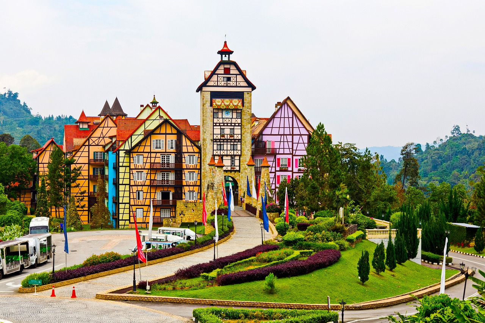
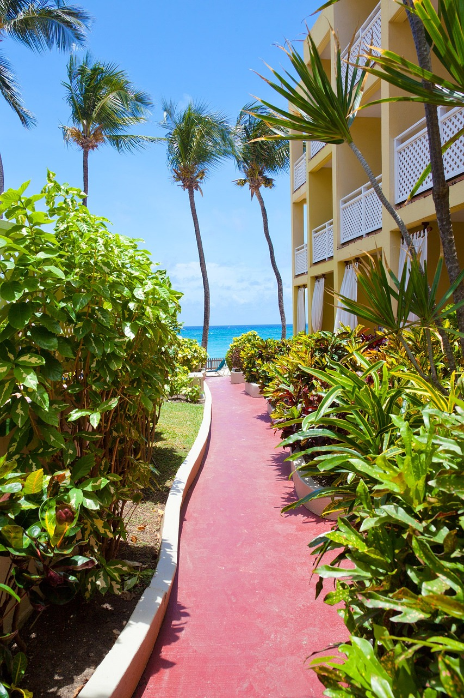

Hotel Listings
The Grand Taniti
The largest hotel on Taniti. A four-star resort that aims to cater to those with a families and a love of golf.

The Tanitian Reserve
A high class hotel located cloin a quiet part of the island. This hotel prides itself on luxury and service, especially with business clients.

The Breezy Inn
The largest family-owned and operated hotel on the island. This establishment is renowned for its commitment to only serve local cuisine and delicacies.